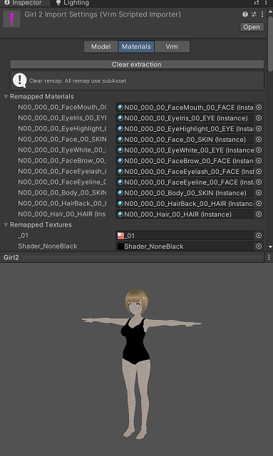

現在、Project内のAssets/Zgock/Models/Girl2 にサンプルのGirl2.vrmが入っています。
VRMコンソーシアム標準のUniVRMライブラリを導入してVRMファイルをfbx等と同様にhumanoid rigと使えるようにしていきます
UniVRMはVRMコンソーシアムが開発しているUnityでVRMモデルを扱うためのライブラリで、MITライセンスにて配布されています
VRM規格にはVRM0.x系と1.x系があり、枯れていて安定しているのは0.x系なのですが、URPを標準で扱えるのは1.x系なので今回は1.xを使用します
UniVRMのリリースページから最新のUniVRMパッケージをダウンロードします
UniVRMはVRM-***で始まる方がVRM1.x用、UniVRM-***で始まる方がVRM0.x用なので間違えないようにしてください
今回はVRM-0.121.0_640f.unitypackageをダウンロードして、適当なフォルダに保存してください
Unityのprojectウィンドウ内を右クリック、import package>custom packageを選んでダウンロードしたunitypackageをインストールしてください
import内容の確認ウィンドウが出たらImportを選んでください
インストールが完了後、projectウィンドウ内に以下の３つのフォルダが作成されていれば大丈夫です
プロジェクト添付のGirl2.vrmをUnityのURP環境で使えるようにセットアップします
Assets/Zgock/Models/Girl2/VRM/Girl2.vrmを選択してInspectorウィンドウを開き、Versionを1.0に変更します
「Migrate To Vrm 1」にチェックを入れて「Apply」を押してください
これでGirl2.vrmをhumanoidとして扱えるようになりましたが、デフォルトではSRP用のマテリアルが適用されているため、プレビューを見ても「いつものピンク色」になっています
そのため、URPで扱う場合はマテリアルをURP用に変更する必要がありますので、以下の手順で変更します
まず、Materialsタブを選択して、「extract Materials and Textures」をクリックしてください
Girl2.vrmのあるフォルダの下に、MaterialsとTexturesのフォルダが展開されます
Materialsフォルダ内のマテリアルを全て選択して、Inspectorウィンドウを開いてください
Shaderを「VRM10/MToon10」から「VRM10/Universal Render Pipeline/MToon10」に変更してください
これでピンク状態は解消されましたが、目の部分の描画がまだおかしいです

これはUniVRM1.xの既知の不具合で、シェーダーを変更しただけでは描画順パラメータが正しく設定されないというバグがあるためです
次の手順でこれを修正していきます
Materialsフォルダ内にあるマテリアルのうち、RenderQueue Offsetが0以外(-なにがし)になっているものを選択してください
Inspectorウィンドウ内のRenderQueue Offsetを「-2」であれば「0-2」というように頭に0を加えて変更してください
Girl2.vrmであればEyeHighlight、EyeIris、FaceBrow、Eyelineが対象になるはずです
これで目の部分の描画が正しくなりました
Assets/Zgock/Models/Girl2/ExtraにこのVRMをVRoid Studioで編集可能な.vroid形式のファイルを入れてありますので、自分の好みに弄りたい方は自由に弄ってください
Girl2.vrmおよびGirl2.vroidについてはCC-BYライセンスとさせていただきます。